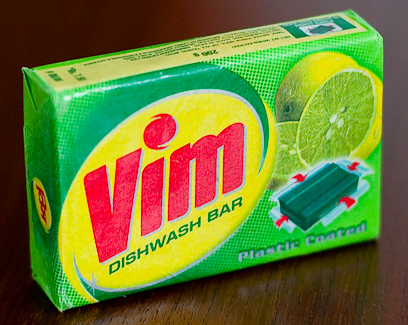

Begin climbing one of the steepest learning curves out there. You’ll use vim, a command line text editor guaranteed to make you look, feel and smell like a hacker.
Students will use basic Vim commands to complete an online tutorial.
Students will use basic Vim commands to modify local text files in a variety of ways.